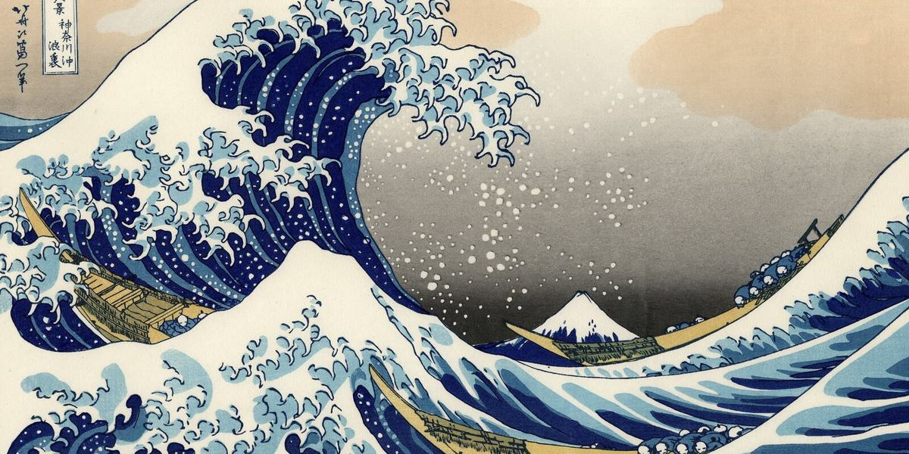
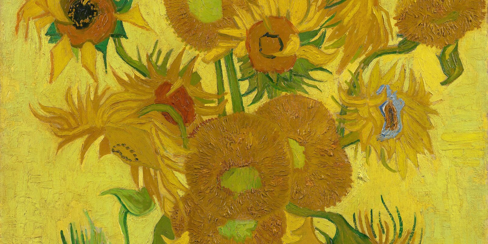

A man who had lost everything painted himself at his most unmoved — the market's favourite proof that the life does not touch the work.
Now the records sit with blue-chip impressionism and the twentieth century's quietest names. The ceiling keeps moving; the works do not.
The same canvas is worth a tenth as much if the chain of ownership has a gap — provenance is the riskless part of price.
The best works never reach an auction; they move between three or four people over a bottle that settles it.
Twenty years of blue-chip is not a fashion but a discipline — the emerging names supply the excitement, the blue-chip the floor.
The shows worth attending hold forty people and sell out before the invitation is printed — ME can place you at two or three a season.
Write to us and be matched with the right collector, dealer or sale room, in the right city, at the right hour. By appointment, in strictest confidence.